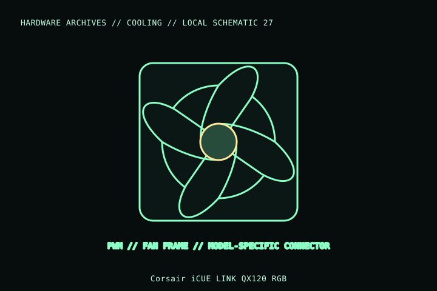

[ INDIVIDUAL COMPONENT // COOLING ]
Corsair iCUE LINK QX120 RGB
A 120 × 25 mm QX-series RGB PWM fan in Corsair’s iCUE LINK ecosystem. Record this as the single-fan QX120 model; the starter kit and multi-fan bundles include additional system hardware and different SKUs.

MODEL IDENTIFICATION: Verify full model, suffix, SKU, generation, connector, and host-support documentation against the physical item. The record describes only the identified model and does not guarantee host compatibility.
Specifications
| Exact identity | iCUE LINK QX120 RGB; CO-9051001-WW single-fan SKU |
|---|---|
| Frame | 120 × 120 × 25 mm |
| Fan speed | Up to 2,400 rpm per Corsair product data |
| Connection | iCUE LINK system connector; requires compatible LINK system hub/cable path, not a standard motherboard 4-pin PWM plug |
| Host fit | 120 mm chassis/radiator mount; RGB control and fan power depend on LINK hub and iCUE-compatible system. |
| Electrical notes | Use the manufacturer hub and wiring guide; the QX120 LINK interconnect and LED supply are system-specific. |
Compatibility and installation
- Use the correct QX120 SKU and included LINK cable/hub; do not treat the LINK interface as a generic PWM/ARGB connection.
- Check 25 mm depth, screw length, radiator stack, airflow direction, and adjacent panel/cable clearance.
- Confirm the installed LINK hub is supported, powered, and enumerated before using software fan/lighting control.
Service notes
Disconnect system power before reconnecting LINK cables. Clean blades with the rotor held still and inspect the cable latch, frame, and bearings; replace a damaged fan rather than opening it.
Manufacturer references
- Corsair — iCUE LINK QX120 RGB single fanManufacturer product family/SKU reference; check page SKU selector and bundle contents.
- Corsair — QX RGB fan supportManufacturer manuals and system compatibility.
Model variants and revisions may change specifications or included hardware; the manufacturer’s exact product page/manual and the host manual take precedence.